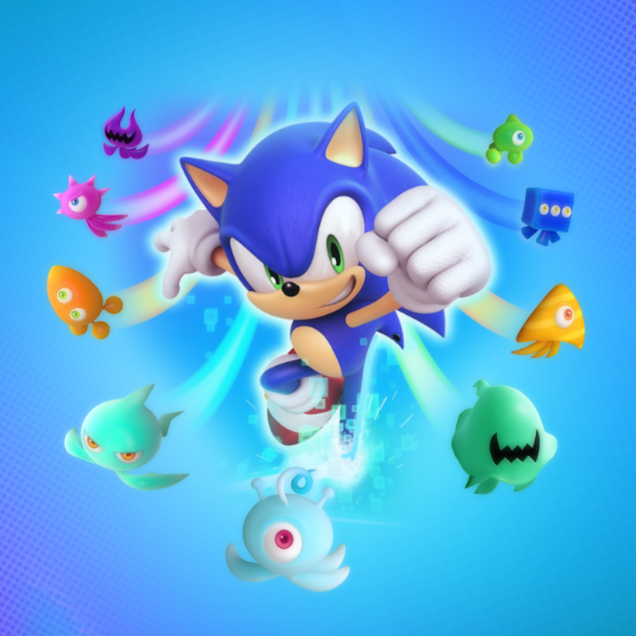
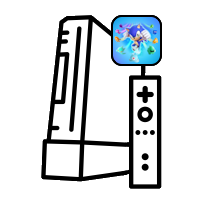

Personal Games
Project Colors
A remake of the 2010 Sonic Colours Wii game in Unreal Engine
Slenderman VR
A remake of the 2011 Slenderman: The eight pages game built in Unity for virtual reality
Portal VR
A remake of the 2007 Portal game built in Unity for virtual reality
Personal Projects
Sonic Colours stage extractor
A tool to extract and convert stages from Sonic Colors to Unreal Engine
Python playlist player
A python program to create playlists and play them through spotify
Python weather app
A python program to fetch and display live weather data from any major city
Project Colours
This project is a WIP recreation of the 2010 Sonic Colours Wii game in Unreal Engine 5. This has been a passion of mine for just over a year now, everything in the demonstration video below is programmed, designed and developed by me alone. It was created in Unreal Engine 5 with both blueprints for more simple systems and elements and C++ for the more advanced system such as Sonic's physics. The physics system also runs on an asynchronous thread independently of the visual rendering to ensure that even at low framerates the physics stay consistent and accurate. A large portion of the game uses tools developed by myself such as the Sonic Colours stage extractor that you can also see on this portfolio website for more details about what it does and how it works. These custom tools are not only advanced but they also reduce the requied amount of time to create stages from weeks to just a day or 2. Feel free to watch the video below to see the game from the title screen all the way to the end of the first stage.

Slenderman VR
This project is a recreation of Slenderman: The eight pages from 2012 built inside of the Unity game engine. This recreation was build in just under 3 months and was more of a side project for me, the game is completely VR compatible with the Oculus quest 1, 2 and 3 or PCVR. I did not do as much with this project as I wish I had however, I am still pleased enough of it as it shows off my capability for developing on multiple platforms as this game runs on both Windows (PC) and Oculus quest (Android). Even though the Oculus quest 1 is a very weak mobile headset I was still able to optimize and design the game in a way to ensure it would run at a constant and stable 72fps. While I do not have this project on any of my current storage devices, I still have a trailer that was made for the game that can be seen below. I am not amazing at marketing and will definitly stick to pogramming but at least this shows off the game mechanics and its functionality in VR.
Sonic Colours stage extractor
This tool is a personal mini-project of mine that was designed to extract object/stage data from the original Sonic Colours Wii game from 2010. This tool is currently built in blueprints while I am still prototyping but the plan is to convert it all to C++ since this tool is starting to get quite advanced/messy for blueprints. As demonstrated in the video below, the tool takes in a .xml file from the Wii game containing all the object/stage data then loop through each element in the .xml file grabbing its location, rotation, scale and parameters upon converting it to an Unreal compatible actor. These actors are custom made by me and are designed to replicate their counterparts from the original game, the tool will pass on the transform and parameters of each object onto the Unreal actors with all of the correct data. Some parameters and rotation needs to be adjusted for Unreal engine to work with them as rotations and parameters work drastically differently from a Wii game. The hardest part of making this tool was having to reverse engineer/work out how the files were formatted and how each object in the original game functioned in order to seamlessy integrate these files into Unreal engine.